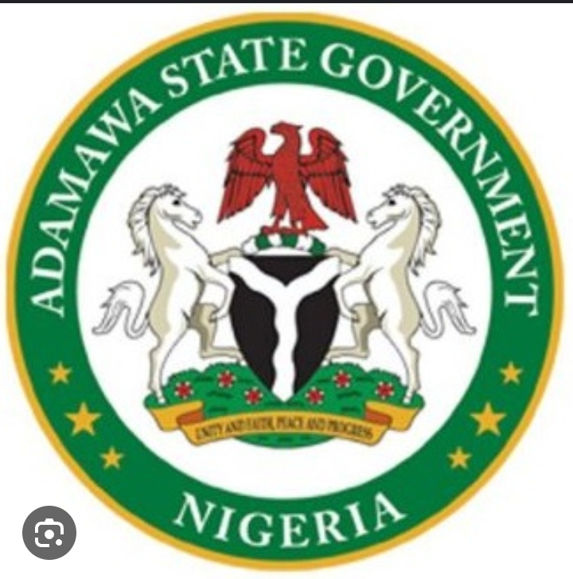
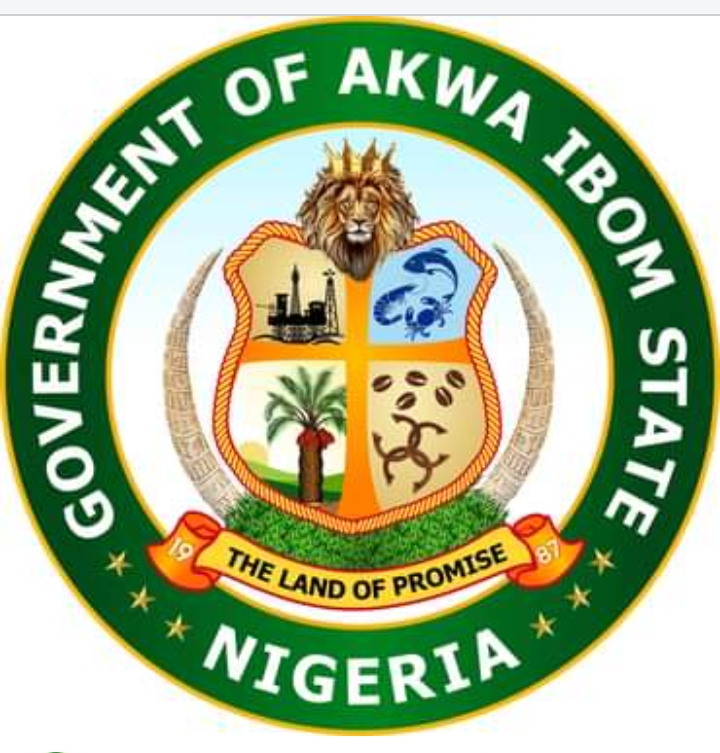
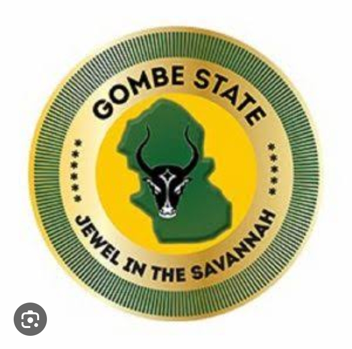
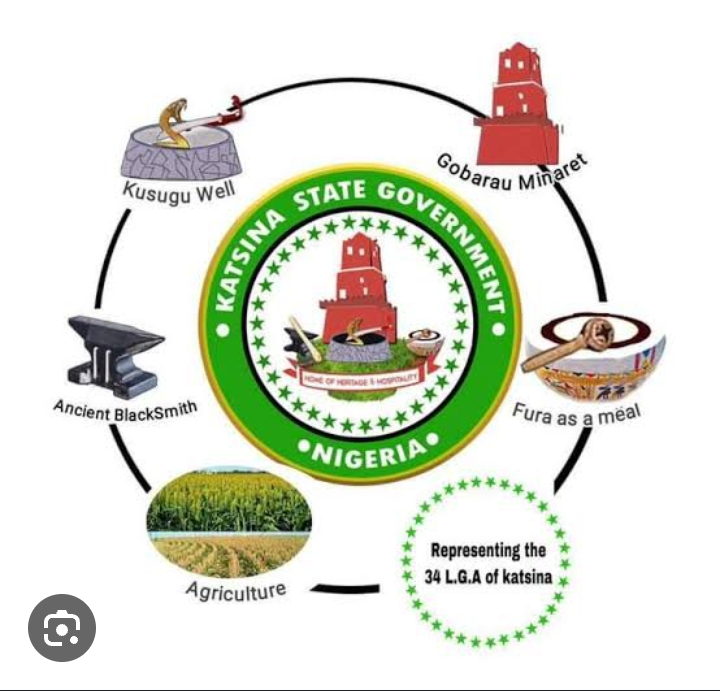
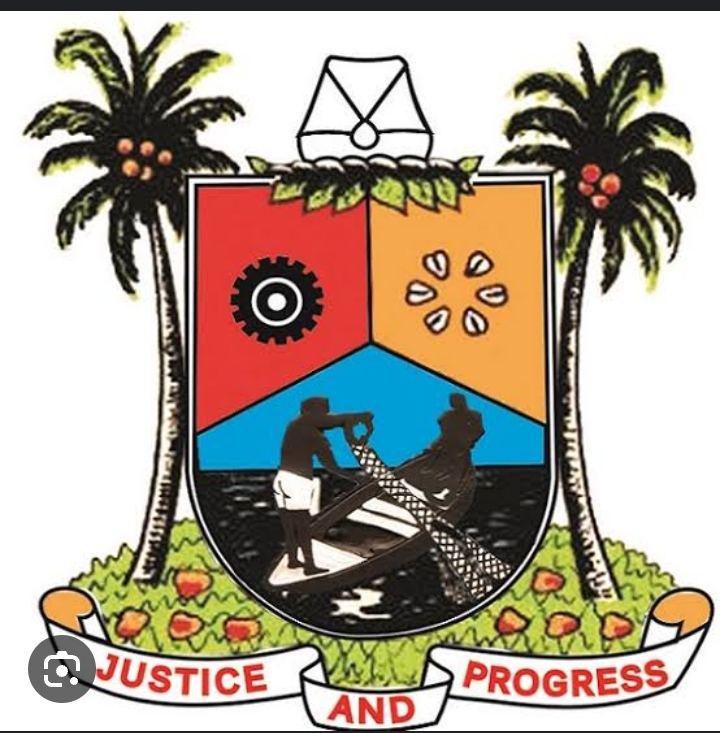
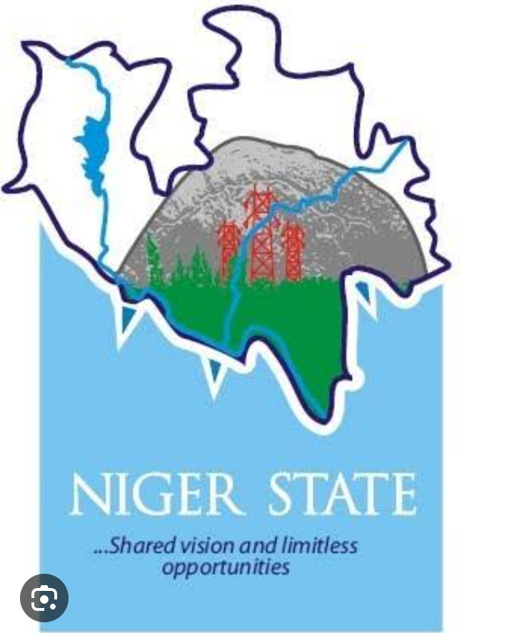
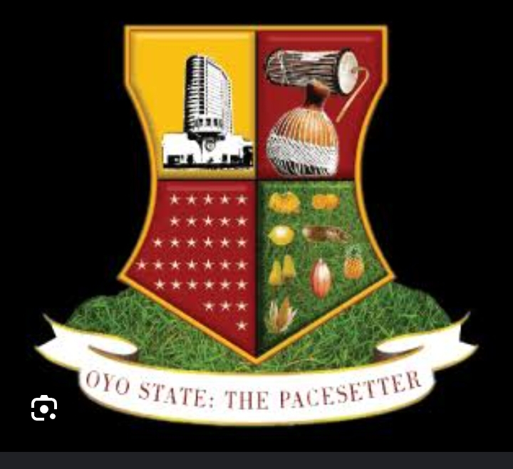
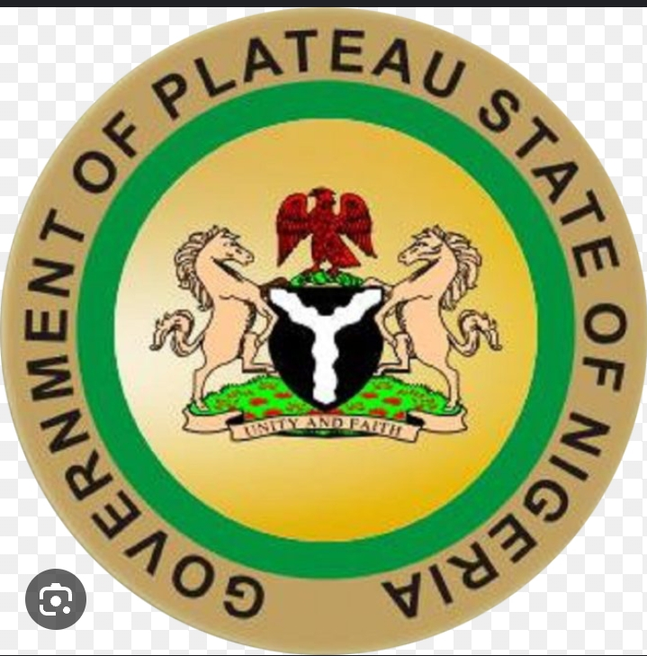

| S/N |
STATE |
CAPITAL |
WEBSITE |
CURRENT GOVERNOR |
SLOGAN |
LOGO |
| 1 |
ABIA |
UMAIAH |
abia |
Alex Otti |
GOD'S OWN STATE |
|
| 2 |
ADAMAWA |
YOLA |
adamawa |
Ahmadu Umaru Fintiri |
LAND OF BEAUTY |
 |
| 3 |
AKWA-IBOM |
UYO |
akwa-ibom |
Umo Eno |
LAND OF PROMISE |
 |
| 4 |
ANAMBRA |
AWKA |
anambra |
Charles Soludo |
LIGHT OF THE NATION |
|
| 5 |
BAUCHI |
BAUCHI |
bauchi |
Bala Mohammed |
PEARL OF TOURISM |
|
| 6 |
BAYELSA |
YENAGOA |
bayelsa |
Douye Diri |
GLORY OF ALL LANDS |
|
| 7 |
BENUE |
MAKURDI |
benue |
Hyacinth Alia |
FOOD BASKET OF THE NATION |
|
| 8 |
BORNO |
MAIDUGURI |
borno |
Babagana Zulum |
HOME OF PEACE |
|
| 9 |
CROSS-RIVER |
CALABAR |
cross-river |
Bassey Otu
| THE PEOPLE'S PARADISE |
|
| 10 |
DELTA |
ASABA |
delta |
Sheriff Oborevwori |
THE BIG HEART |
|
| 11 |
EBONIYI |
ABAKALIKI |
eboniyi |
Francis Nwifuru
| SALT OF THE NATION |
|
| 12 |
EDO |
BENIN |
edo |
Godwin Oaseki |
HEART BEAT OF NIGERIA |
|
| 13 |
EKITI |
ADO-EKITI |
ekiti |
John Fayemi |
LAND OF HONOUR AND INTERGRITY |
|  |
| 14 |
ENUGU |
ENUGU |
enugu |
DR.Peter Mbah |
COAL CITY STATE |
|
| 15 |
GOMBE |
GOMBE |
gombe |
Muhammed Yahaya |
JEWEL IN THE SAVANNAH |
 |
| 16 |
IMO |
OWERRI |
owerri |
Hope Uzodinma |
EASTERN HEARTLAND |
|
| 17 |
JIGAWA |
DUTSE |
jigawa |
Malam Namadi |
THE NEW WORLD |
|
| 18 |
KADUNA |
KADUNA |
kaduna |
Uba Sani |
CENTER OF LEARNING |
|
| 19 |
KANO |
KANO |
kano |
Abba Yusuf |
CENTER OF EXCELLENCE |
|
| 20 |
KASTINA |
KASTINA |
kastina |
Dikko Umaru |
HOME OF HOSPITALITY |
 |
| 21 |
KEBBI |
BENIN-KEBBI |
kebbi |
ABUBAKAR ATIKU |
LAND OF EQUITY |
|
| 22 |
KOGI |
LOKOJA |
kogi |
Yahaya Bello |
THE CONFLUENCE STATE |
|
| 23 |
KWARA |
ILORIN |
kwara |
Abdulrahman Abdulrazaq |
STATE OF HARMONY |
|
| 24 |
LAGOS |
IKEJA |
lagos |
Sanwo-Olu |
CENTER OF EXCELLENCE |
 |
| 25 |
NASARAWA |
LAFIA |
nasarawa |
Abdullahi Sule |
HOME OF SOLID MINERALS |
|
| 26 |
NIGER |
MINNA |
niger |
Mohammed Bago |
THE POWER STATE |
 |
| 27 |
OGUN |
ABEOKUTA |
ogun |
Dapo Abiodun |
GATEWAY STATE |
|
| 28 |
ONDO |
AKURE |
ondo |
Rotimi Akeredolu |
SUNSHINE STATE |
 |
| 29 |
OSUN |
OSOGBO |
osun |
Ademola Adeleke |
LAND OF VIRTUE |
|
| 30 |
OYO |
IBADAN |
oyo | \
Oluseyi Abiodun |
PACESETTER STATE |
 |
| 31 |
PLATEAU |
JOS |
plateau |
Caleb |
HOME OF PEACE AND TOURISM |
 |
| 32 |
RIVERS |
PORT-HARCOURT |
rivers |
Siminalayi Fubara |
TREASURE BASE OF THE NATON |
|
| 33 |
SOKOTO |
SOKOTO |
sokoto |
Ahmad Aliyu |
SEAT OF THE CALIPHATE |
|
| 34 |
TARABA |
JALINGO |
taraba |
Agbu Kefas |
NATURES GIFT TO THE NATION |
|
| 35 |
YOBE |
DAMATURU |
yobe |
Mai Mala |
PRIDE OF THE SAHEL |
 |
| 36 |
ZAMFARA |
GUSAU |
zamfara |
Dauda Lawal |
FARMING IS OUR PRIDE |
|